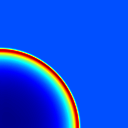

- Build/Test information:
- Build directory: .
- Parallel run
- Files:
- Dimensionality: 3
- Compilation:
Successful
- Compilation time: 113.593 s
- Compilation command:
cmake --build /home/bwibking/regression-tests/quokka/builddir -j 16 -- test_hydro3d_blast
- make output
- Execution:
- Execution time: 6667.588 s
- Execution command:
mpirun -n 16 ./Sedov-CPU.ex blast_unigrid_128_cpu.in plotfile_prefix=Sedov-CPU_plt checkpoint_prefix=Sedov-CPU_chk amr.checkpoint_files_output=0
- execution output
- execution stderr
- Comparison:
/home/bwibking/regression-tests/amrex/Tools/Plotfile//fcompare.gnu.ex --abort_if_not_all_found -n 0 /home/bwibking/regression-tests/quokka-benchmarks/Sedov-CPU_plt10000 Sedov-CPU_plt10000
| variable name | absolute error | relative error |
|---|
| | (||A - B||) | (||A - B||/||A||) |
|---|
| level = 0 |
| gasDensity | 0.0 | 0.0 |
| x-GasMomentum | 0.0 | 0.0 |
| y-GasMomentum | 0.0 | 0.0 |
| z-GasMomentum | 0.0 | 0.0 |
| gasEnergy | 0.0 | 0.0 |
| gasInternalEnergy | 0.0 | 0.0 |
| x-velocity | 0.0 | 0.0 |
| y-velocity | 0.0 | 0.0 |
| z-velocity | 0.0 | 0.0 |
